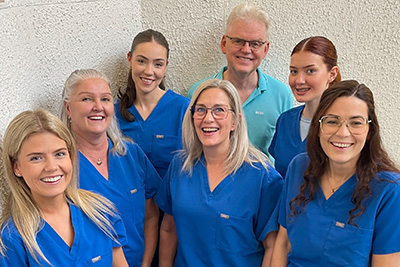

Um fyrirtækið

Stofan var opnuð hér á Laugaveginum í ágúst 1986. Gísli er eini tannlæknirinn á stofunni en auk hans vinna hjá okkur fjórir tanntæknar, ritari í móttöku og tannsmiður. Við sinnum eingöngu tannréttingum.
Við leitumst við að veita vandaða og persónulega þjónustu og reynum að hafa heimsóknirnar eins þægilegar og hægt er. Við leggjum mikið upp úr fræðslu og upplýsingum, bæði til sjúklinga og forráðamanna, svo að allir geti fylgst með framvindu meðferðarinnar.
Vandaðar tannréttingar eru tímafrekar, krefjast nákvæmni í vinnubrögðum og kosta mikið. Við leggjum okkur öll fram við tannréttinguna og leitumst við að ná sem allra bestum árangri. Markmið okkar er að árangur meðferðarinnar sé varanlegur og verði til ánægju alla ævi.
Foreldrar eru ætíð velkomnir með börnum sínum, hvort heldur þeir kjósa að bíða á biðstofunni eða koma með inn á aðgerðarstofuna. Til að miðla upplýsingum til foreldra sem ekki geta mætt með börnum sínum eru skrifaðar athugasemdir í sjúkraskrá í lok hverrar heimsóknar.